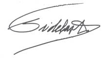

Querido
compañero Alarcón:
Te ruego que
al iniciar la sesión de la mañana, leas
el siguiente mensaje a la Asamblea Nacional.

Un fuerte
abrazo,
Fidel Castro
Ruz
Diciembre 27
de 2007
8 y 40 p.m.
Compañeros de la
Asamblea Nacional:
Es muy duro el trabajo de ustedes. Frente a las necesidades acumuladas y
crecientes que nuestra sociedad heredó de la neocolonia
yanqui el 1º de enero de 1959, muchos
soñábamos crear un país con justicia plena e independencia total. En la ardua y
desigual lucha, llegó un momento en que nos quedamos solos.
Es legítimo nuestro orgullo cuando estamos próximos a cumplir 50 años del triunfo, porque hemos resistido durante casi medio siglo al imperio más poderoso que se ha creado en la historia. En la Proclama que suscribí el 31 de julio de 2006, ninguno de ustedes vio jamás acto alguno de nepotismo ni usurpación de las funciones del Parlamento. En ese año difícil y a la vez prometedor de la Revolución, la unidad del pueblo, el Partido y el Estado eran requisito esencial para seguir adelante y enfrentar la
amenaza
declarada de una intervención militar enemiga por parte de Estados Unidos.
En la visita que el pasado 24 de diciembre realizó el
compañero Raúl a varios distritos del municipio que me hizo el honor de postularme
como candidato al Parlamento, se percató de que todos los miembros del grupo numeroso de la candidatura de la población que
abarcaba el distrito que en el pasado se había hecho famoso por su
combatividad, aunque de muy baja escolaridad, eran graduados de alto nivel, lo
cual le emocionó profundamente, como él mismo narró a nuestra televisión.
Los cuadros del Partido, el Estado, el Gobierno y las
organizaciones de masas se enfrentan a nuevos problemas, en su trato con el
pueblo inteligente, observador y culto, que detesta trabas burocráticas y
explicaciones mecánicas. En el fondo cada ciudadano libra su propia batalla
contra la tendencia innata del ser humano a seguir el instinto de
supervivencia, una ley natural que rige la vida.
Todos nacemos signados por ese instinto que la ciencia define como algo
elemental. Chocar con él es bueno porque nos lleva a la dialéctica y a la lucha
constante y desinteresada; nos hace más martianos y verdaderamente comunistas.
Lo que más ha destacado la prensa internacional sobre Cuba en días
pasados, fue la frase en que expresé el 17 de este mes en carta al Director de
la Mesa Redonda de la televisión cubana, que no soy una persona aferrada al
poder. Puedo añadir que lo fui un tiempo por exceso de juventud y escasez de conciencia,
cuando sin preceptor alguno iba saliendo de mi ignorancia política y me
convertí en socialista utópico. Era una etapa en que creía conocer lo que debía
hacerse, ¡y deseaba poder hacerlo! ¿Qué
me hizo cambiar?: la
propia vida, a medida que profundizaba en el pensamiento de Martí y de los
clásicos del socialismo. Mientras más luchaba más me identificaba con tales
objetivos y mucho antes del triunfo pensaba ya que mi deber era luchar por
éstos o morir en el combate.
Por otro lado, nos acechan grandes peligros que amenazan a la especie
humana. Es algo que se hizo cada vez más evidente para mí desde que por primera
vez previne en Río de Janeiro que una especie estaba en riesgo de desaparecer
como consecuencia de la destrucción de sus condiciones naturales de vida, hace
más de 15 años, en junio de 1992. Últimamente, día por día, es cada vez mayor
el número de los que
comprenden este riesgo real.
Un libro reciente de Joseph Stiglitz, que fue vicepresidente del Banco Mundial y asesor económico principal del presidente Clinton hasta el año 2001, Premio Nobel y bestseller en Estados Unidos, aporta datos actuales sobre el tema que son irrebatibles. Denuncia que Estados Unidos, país que no suscribió el Convenio de Kyoto, es el mayor emisor de dióxido de carbono, lanzando cada año al espacio 6 mil millones de toneladas que trastornan la atmósfera, sin la cual es imposible la vida. A esto se añade la condición de ser el mayor aportador de otros gases de efecto invernadero.
Pocas personas conocen estos datos. El propio sistema económico que
impuso el derroche insostenible de energía, impide que ese libro de Stiglitz se divulgue: su magnífica edición se limita a unos
pocos miles para garantizar las ganancias. Es una exigencia del mercado sin el
cual la empresa editora no podría existir.
Hoy se conoce que la vida en la Tierra ha sido protegida por la capa de
ozono, ubicada en el anillo exterior entre 15 y 50 kilómetros de altura en la
zona conocida como estratósfera, que sirve de escudo
al planeta contra las radiaciones solares que pueden ser dañinas. Hay gases de
efecto invernadero que tienen más poder de calentamiento que el dióxido de
carbono y amplían el agujero de la capa de ozono sobre la Antártida,
que cada primavera pierde hasta el 70 por ciento de su volumen, un fenómeno que
viene produciéndose progresivamente, causado por el hombre. Para que se tenga
una idea clara, basta señalar que el carbono promedio per
cápita que emite el mundo es de 4.37 toneladas métricas. En el caso de Estados
Unidos el promedio es de 20.14, casi
5 veces más. En África es de 1.17, en Asia y Oceanía 2.87.
La capa de ozono, en resumen, protege de las radiaciones ultravioletas y
calóricas que afectan el sistema inmunológico, la
vista, la piel y la vida de los seres humanos. En condiciones extremas, si es
destruida por el hombre esa capa, afectaría toda forma de vida en el planeta.
Otros problemas ajenos a nuestra patria, o a cualquier otra en
condiciones similares, nos amenazan. Una contrarrevolución victoriosa sería
horrible, peor que la tragedia que sufrió Indonesia. Sukarno,
derrocado en 1967, fue un líder nacionalista que desde posiciones leales a
Indonesia dirigió las guerrillas que lucharon contra los japoneses.
El General Suharto, que lo derrocó, fue
entrenado por los ocupantes japoneses. Finalizada la Segunda Guerra Mundial,
Holanda, aliada de Estados Unidos, restableció su dominio sobre aquel lejano,
extenso y poblado territorio. Suharto maniobró. Tomó en sus manos las banderas del
imperialismo yanqui. Llevó a cabo un atroz genocidio. Hoy se conoce que
cumpliendo instrucciones de la CIA, no solo mató a cientos de miles, sino que
encarceló a un millón de comunistas y los privó de toda propiedad y derechos, a
ellos y a sus descendientes; amasó
una fortuna familiar de 40 mil millones de dólares que al valor actual de esa
moneda sería equivalente a cientos de miles de millones, por la entrega de los
recursos naturales y el sudor de los indonesios. Occidente pagó. El tejano Lyndon Johnson, sucesor de
Kennedy, era el presidente de Estados Unidos.
Las noticias que llegaron hoy sobre lo ocurrido en Pakistán es otro
ejemplo de los peligros que amenazan a la especie: el conflicto interno, en un
país que posee armas nucleares. Ello es consecuencia de las políticas
aventureras y las guerras para apoderarse de los recursos naturales del mundo,
desatadas por Estados Unidos. Ese país,
envuelto en un conflicto que no provocó, fue amenazado con ser llevado a la
edad de piedra.
Las circunstancias especiales que rodean a Pakistán influyeron de
inmediato en los precios del petróleo y las acciones de las bolsas de valores.
Ningún país o región del mundo puede librarse de las consecuencias. Hay que
estar preparados para todo.
Ni un solo día de mi vida dejé de aprender algo.
Martí nos enseñó que "toda la gloria del mundo cabe en un grano de
maíz". He dicho y repetido muchas veces aquella verdadera cátedra de ética
contenida en solo 11 palabras.
Los Cinco Héroes cubanos prisioneros del imperio son paradigmas a imitar
por las nuevas generaciones.
Afortunadamente las conductas ejemplares siempre se multiplican en la
conciencia de los pueblos, mientras exista nuestra especie.
Estoy seguro de que muchos jóvenes cubanos, en su lucha contra el
Gigante de las Siete Leguas, harían lo mismo.
Todo puede ser comprado con dinero menos el alma de un pueblo que jamás
se puso de rodillas.
 Leí el
discurso breve y concreto elaborado por Raúl, que me envió previamente. Es necesario seguir marchando sin detenerse
un minuto. Levantaré mi mano junto a la
de ustedes para apoyarlo.
Leí el
discurso breve y concreto elaborado por Raúl, que me envió previamente. Es necesario seguir marchando sin detenerse
un minuto. Levantaré mi mano junto a la
de ustedes para apoyarlo.
Fidel Castro Ruz
Diciembre 27 de 2007
8 y 35 p.m.